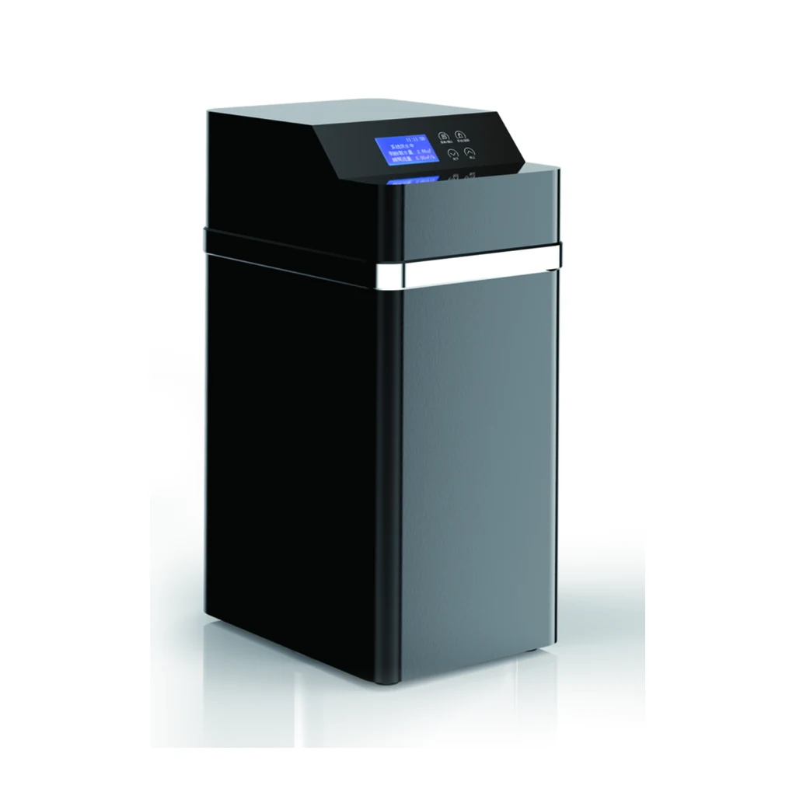

YC-R1000C
- نوع الصمام
- صمام تليين أوتوماتيكي
- وضع التجديد
- عداد / مؤقت / مزيج (عداد/مؤقت)
- ضغط التشغيل
- 0.15-0.5MPa
- مصدر الطاقة
- 220V/110 50Hz
- مقاس المدخل والمخرج
- 3/4"
- مقاس الصرف
- 12mm
- درجة حرارة التشغيل
- 5~48℃
- صمام المحلول الملحي
- نعم
- حجم الراتنج
- 12L
- مقاس خزان FRP كما ورد في المصدر
- 1015
- معدل التدفق
- ≤1.0T/H
- أبعاد المنتج (مع خط التجاوز)
- 270X420X510mm